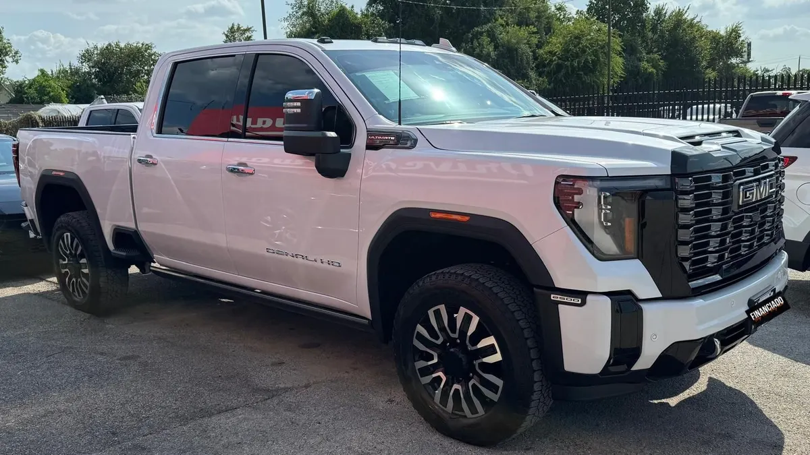

2025 GMC Sierra Denali 2500 Ultimate
Gray • ID CCH-514

1/5General
| Year | 2025 |
|---|---|
| Make | GMC |
| Model | Sierra Denali 2500 Ultimate |
| Type | Truck |
| Color | Gray |
| Mileage | 15,000 miles |
| Drivetrain | To be confirmed |
Model specifications
| Engine | varies depending on unit: Sierra 1500 (2.7L Turbo I4 standard) or Sierra 2500HD (6.6L V8 gas / 6.6L Duramax diesel) |
|---|---|
| Horsepower | varies depending on unit: 2500HD 6.6L V8 gas 401; Duramax diesel 470 |
| Torque | varies depending on unit: 2500HD gas 464 lb-ft; Duramax diesel 975 lb-ft |
| Transmission | 10-speed automatic (Allison in 2500HD) |
| Model drivetrain | 4x2 / 4x4 (varies depending on unit) |
| Fuel economy (MPG) | Varies depending on unit |
| Fuel | Gasoline / diesel (depending on unit) |
| Max towing | 18500 (2500HD AT4X diesel, aproximado) |
| Seats | 6 |
| Body style | Pickup |
Typical figures for this year and model, taken from public sources (manufacturer, KBB, Edmunds). The dealer confirms the exact engine, drivetrain and equipment of this unit.
Visible in the photos / from the listing name
- Diesel engine
Great for
For anyone who needs a truck for work and everyday driving.
Year, mileage and features come from the inventory data; confirm this unit's exact details with the dealer. This sheet shows no prices: the dealer provides them in writing.